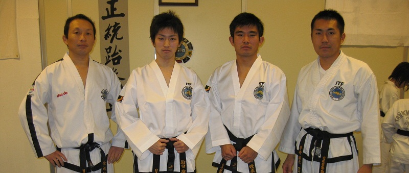
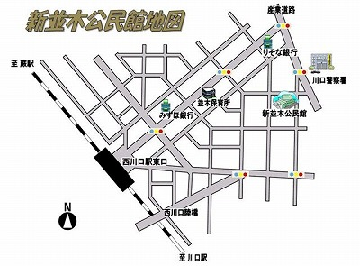

道場開設15周年 アニバーサリーキャンペーン！（2014年10月1日〜）
先着５名様限定のお得なキャンペーン！
おかげさまで、道場も開設15周年を迎えました。
感謝の気持ちを込めての、アニバーサリーキャンペーンです。
特典２つで最大 25,500円がお得に！
- 特典１：２ヶ月分の月謝が無料（10,000円〜15,000円相当）
- 特典２：テコンドー胴着が無料（9,500円〜10,500円相当）
テコンドー動画
練習風景、試合、笑劇映像！？
少年部練習風景
成年部練習風景
最新情報！
道場のブログです。最新情報がここに表示されます。
テコンドーで一緒に汗を流しませんか？
テコンドーって？
テコンドーは韓国生まれの武道です。
なんといっても、柔軟な体から繰り出される華麗な足技が特徴です。
まずは、体験練習から！
興味はあるけれど、スポーツ経験がない、体が硬いので無理そう・・・
心配はいりません。誰でも最初は初心者！むしろ最初から柔らかい人のほうが「まれ」です。
まずは、体験練習でテコンドーを体験してみませんか？
武道初心者、経験者問わず基本から丁寧に指導します。
体験練習・見学
ステップ１ 電話まずはお電話で訪問日、希望道場（川口or蕨）、体験or見学どちらを希望するのか？、性別、年齢、訪問予定時刻をお伝え下さい。 体験時に準備するもの ・運動できる服装（ジャージやハーフパンツ等） ・飲み物（汗をかきます。建物内に水道はあります） ・汗拭きタオル等 ・着替え 連絡先： 電 話：090-8879-9407 ［担当：金（キン）］ |
|
 |
ステップ２ 訪問稽古時間（稽古スケジュール参照）を確認して、ご希望の稽古時間にお越しください。 また、稽古時間内であればいつでも大丈夫です。ご都合による途中退出等もできますので、お気軽にお越し下さい。 親御様に関しましても、お子様をご覧いただける環境となっております。 駐車場は、蕨市市民会館は無料でございます。 川口並木公民館は近くに有料（３０分１００円程度）がございます |
ステップ３ 体験 or 見学お越しいただきましたら、さっそく着替えて体験開始！（更衣室有） 最初は難しいことはしませんので、気軽な気持ちでご参加下さい 常に各個人のペースに合わせて稽古を行っていきます。 見学の場合は、椅子に座りながらご見学いただけます。 また、途中退出等もできますので、空いている時間を有効にご活用下さい。 お帰りの際、詳しい資料をお渡しいたします。 |
|
会員種別とクラス
会員種別とクラスにより会費が異なります。まずは、該当する会員種別とクラスをご確認ください。
会員種別
| 一般会員 | 通常は一般会員です。 |
| 家族会員 | 家族に稽古生がおられる方です。二人目以降は家族会員となり、会費の割引があります。 |
| 準会員 | 他の道場に所属している方です。会費は半額になります。 |
| サークル会員 | 道着なし、昇級審査なしで練習をしたいという方です。諸経費は月々の月謝のみです。 |
クラス
| 幼年・少年部 | 4歳〜小学６年生までの男女児童 |
| 成年女子部 | 12歳以上女子 |
| 男子学生部 | 中学、高校、専門、大学生男子 |
| 成年男子部 | 18歳以上社会人男子 |
会費一覧
入会金と月謝の一覧表です。半年払い、一年払いではお得な割引があります！
※ 上記会費で、川口クラブ、蕨クラブの両方で稽古ができます。
※ 入会した月の15日をすぎての入会月会費は半額となります
入会時にかかる費用（概算）
入会時にかかる費用の一例です。入会時には、入会金、月謝一ヶ月分、道衣代、教材費(教本、ミット)が必要になります。
道衣のサイズや月謝のまとめ払いなどで金額は変動しますので、詳細はお尋ねください。
幼年・少年部
4才より12才までの男女の場合
| 入会金 | 6,000円 |
| 月会費(半年、１年払い割引あり) | 5,000円 |
| テコンドー道衣代 | 9,500円 |
| 教材費（教本、ミット） | 4,500円 |
| スポーツ保険 | 2,000円 |
| 合計金額 | 27,000円 |
女子部・学生部
中学生以上の女性、または、中学、高校、専門、大学生男性の場合
| 入会金 | 6,000円 |
| 月会費(半年、１年払い割引あり) | 6,500円 |
| テコンドー道衣代 | 10,500円 |
| 教材費（教本、ミット） | 4,500円 |
| スポーツ保険 | 2,000円 |
| 合計金額 | 29,500円 |
成年部
18才以上の社会人男性の場合
| 入会金 | 6,000円 |
| 月会費(半年、１年払い割引あり) | 7,500円 |
| テコンドー道衣代 | 10,500円 |
| 教材費（教本、ミット） | 4,500円 |
| スポーツ保険 | 2,000円 |
| 合計金額 | 30,500円 |
金成哲道場の指導員紹介です

師範
|
|


道場広報担当
|
|
指導員
|
|
|
指導補助
|
|
||||||||||||||||||||||
|

練習スケジュールです
練習会場へのアクセス
蕨クラブ |
会場：蕨市民会館内・勤労青少年ホーム ユースパル2階 体育室 住所：埼玉県蕨市中央4-21-29 最寄：ＪＲ京浜東北線「蕨駅」西口より徒歩 8分 電話：048-445-7660 備考：室内に男女更衣室完備、駐車場完備 練習日：毎週月曜日 17：00〜開場 �幼年部：17：15〜17：55まで �少年部：18：05〜19：00まで �成年・女子部：19：30〜21：20まで |
|
川口クラブ |
 |
会場：川口市立並木公民館 ３階・視聴覚室 住所：埼玉県川口市並木２−８−２ 最寄：ＪＲ京浜東北線「西川口駅」東口より徒歩４分 電話：048-251-2288 備考：男子・女子更衣室2階に完備、無料駐車場7台まであり 練習日：毎週水曜日 17：00〜開場 �幼年部：17：15〜17：55まで �少年部：18：00〜18：40まで �成年・女子部：19：00〜20：45まで |